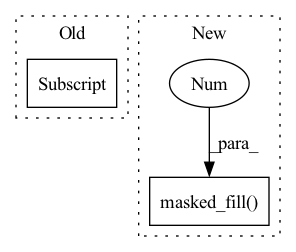

Pattern ID :1622
Before Change
// [n, k], 3σ rule
bernoulli = Bernoulli(logits=meanLogit - 3.0)
// [h*w, n, k] -> [n, h*w, k] (0 or 1 -> choose or not choose)
randomFalseMask = bernoulli.sample((logit.shape[1] , )).permute(1, 0, 2)
randomFalseMask *= -1e9
bernoulli = Bernoulli(logits=-meanLogit - 3.0)
randomTrueMask = bernoulli.sample((logit.shape[1], )).permute(1, 0, 2)After Change
// [n, h*w, k] (0 or 1 -> choose or not choose)
randomFalseMask = bernoulli.sample((n, h*w, )).bool()
maskedLogit = logit.masked_fill( randomFalseMask, -1e9 )
// randomFalseMask *= -1e9
// maskedLogit = logit + randomFalseMask // + randomTrueMask
In pattern: SUPERPATTERN
Frequency: 3
Non-data size: 2
Instances Fragment ID: 5548277
Project Name: xiaosu-zhu/mcquic
Commit Name: ff056abb47b531e42496967adda543c562e1cefd
Time: 2021-05-12
Author: xiaosu.zhu@outlook.com
File Name: src/mcqc/models/quantizer.py
M Class Name: TransformerQuantizer
N Class Name: TransformerQuantizer
M Method Name: forward(3)
N Method Name: forward(3)
M Parent Class: nn.Module
N Parent Class: nn.Module
M File Name: src/mcqc/models/quantizer.py
N File Name: src/mcqc/models/quantizer.py
M Start Line: 505
M End Line: 554
N Start Line: 508
N End Line: 554
Before Change
to_zeros_mask = ones_mask & (w_abs <= 0.9 * (mu - self.beta * std))
to_ones_mask = zeros_mask & (w_abs >= 1.1 * (mu + self.beta * std))
self.mask[to_zeros_mask] = 0.0 // type: ignore
self.mask[to_ones_mask] = 1.0 // type: ignore
mask = self.mask
del mu, std, ones_mask, zeros_mask, to_zeros_mask, to_ones_mask
else:After Change
ones_mask = self.mask == 1.0
to_zeros_mask = ones_mask & (w_abs <= 0.9 * (mu - self.beta * std))
to_ones_mask = zeros_mask & (w_abs >= 1.1 * (mu + self.beta * std))
self.mask.masked_fill( to_zeros_mask, 0.0 ) // type: ignore
self.mask.masked_fill(to_ones_mask, 1.0) // type: ignore
mask = self.mask
del mu, std, ones_mask, zeros_mask, to_zeros_mask, to_ones_mask Fragment ID: 5548272
Project Name: carefree0910/carefree-learn
Commit Name: 074764f7c4fae38d6f3585df36bdb5d5794b8921
Time: 2020-10-17
Author: syameimaru_kurumi@pku.edu.cn
File Name: cflearn/modules/auxiliary.py
M Class Name: Pruner
N Class Name: Pruner
M Method Name: forward(3)
N Method Name: forward(3)
M Parent Class: nn.Module
N Parent Class: nn.Module
M File Name: cflearn/modules/auxiliary.py
N File Name: cflearn/modules/auxiliary.py
M Start Line: 229
M End Line: 232
N Start Line: 228
N End Line: 231
Before Change
// w_2 = torch.sum(torch.exp(-0.1*(range_param.unsqueeze(-1) ** -2) * (t - c) ** 2), dim=1, keepdim=True) // [B, 1, T]
w_1 = torch.exp(-0.1 * (t - c) ** 2) // [B, L, T]
w_2 = torch.sum(torch.exp(-0.1 * (t - c) ** 2), dim=1, keepdim=True) // [B, 1, T]
w_2[w_2==0.] = 1.
// w_1 = self.normpdf(t, c, range_param.unsqueeze(-1)) // [B, L, T]
// w_1 = torch.distributions.normal.Normal(c, 0.1).log_prob(t) // [B, L, T]After Change
w = self.get_alignment_energies(g, t) // [B, L, T]
if mask is not None:
w = w.masked_fill( mask.unsqueeze(-1), 0.0 )
attn = w / (torch.sum(w, dim=1).unsqueeze(1) + 1e-8) // [B, L, T]
out = torch.bmm(attn.transpose(1, 2), encoder_outputs)
Fragment ID: 5548269
Project Name: keonlee9420/wavegrad2
Commit Name: 523ec241c64ab635218f32d071fd85fbc469e178
Time: 2021-07-13
Author: keonlee9420@gmail.com
File Name: model/modules.py
M Class Name: GaussianUpsampling
N Class Name: GaussianUpsampling
M Method Name: forward(4)
N Method Name: forward(4)
M Parent Class: nn.Module
N Parent Class: nn.Module
M File Name: model/modules.py
N File Name: model/modules.py
M Start Line: 115
M End Line: 135
N Start Line: 120
N End Line: 134